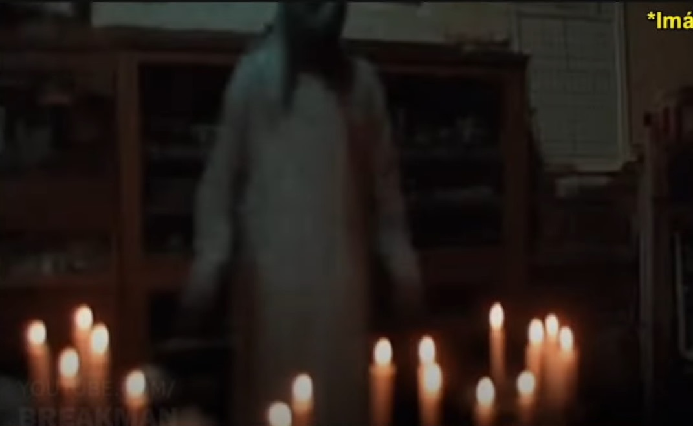
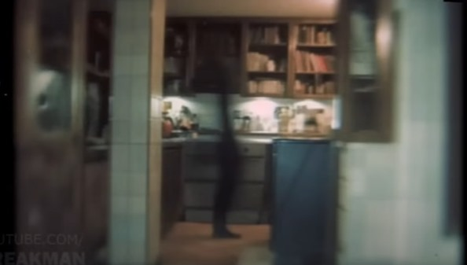
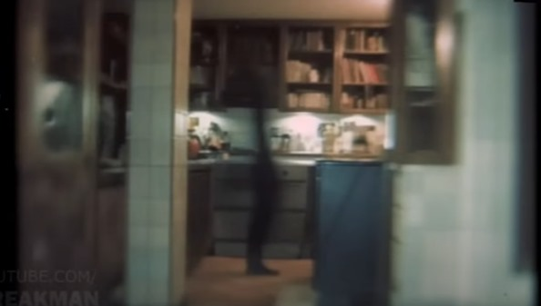

Sitio de terror
El objetivo es explorar y desvelar los enigmas que desafían la lógica y la razón. Te mostrare casos reales que pasan en el día a día e historias imposibles de creer.
.png)
El objetivo es explorar y desvelar los enigmas que desafían la lógica y la razón. Te mostrare casos reales que pasan en el día a día e historias imposibles de creer.
Satanás, llamado también el adversario o el diablo, es el enemigo de toda rectitud y de todos los que desean seguir a Dios. Es un hijo espiritual de Dios que una vez fue un ángel “que tenía autoridad delante de Dios”.
El Padre Celestial les permite a Satanás y sus seguidores tentarnos como parte de nuestra experiencia mortal. Dado que Satanás “busca que todos los hombres sean miserables como él”, él y sus seguidores intentan apartarnos de la rectitud.
.jpeg)
.png)
Es una práctica religiosa o espiritual realizada contra una fuerza maligna utilizando diversos métodos cuyo fin es expulsar o sacar a dicho ente de la persona objeto área que encuentre poseída por la entidad maligna que somete en forma de control en estos entes dependiendo de las creencias de los implicados pueden ser demonios espíritus brujas etcétera. El objeto de la posesión puede ser una persona un animal objetos e incluso lugares como casas o pueblos completos.
En un exorcismo, los exorcistas utilizan una variedad de herramientas, como:
Agua bendita: Para recordar la vida nueva que la persona afligida recibió en su bautismo
Cruz: Un símbolo utilizado por los exorcistas católicos
Salmos y lecturas del Evangelio: Utilizados en el Rito de Exorcismo Mayor
Oraciones exorcísticas: Utilizadas en el Rito de Exorcismo Mayor
Una joven alemana que nació en 1952 y que disfrutó de una vida normal, sin ningún tipo de problemas, hasta que cumplió 16 años, que fue cuando comenzó a sufrir de fuertes temblores, por lo que acudió al médico, donde éste le diagnosticó epilepsia. Al poco tiempo de comenzar estos ataques, Anneliese también comienza a ver terribles imágenes diabólicas, y a escuchar voces que la atormentaban en todo momento. Es ahí cuando decide contarle a su médico, quien no puede hacer nada para detener este tipo de visiones. Finalmente, en el año 1975, el Obispo de Wurzburg, Josef Stangl, autorizó al Padre Arnold Renz y al Pastor Ernst Alt a practicarle un exorcismo a la chica.
El 30 de junio de 1976 fue la última de las sesiones, pues Anneliese falleció el 1º de julio. Los resultados de la autopsia revelaron que la joven se encontraba en estado de desnutrición, razón por la cual habría fallecido; en consecuencia, tanto los padres de la joven como los sacerdotes fueron acusados de negligencia y llevados a juicio.

La Mano Peluda es un programa de radio mexicano que se transmite en Radio Fórmula y se basa en historias de radio-terror. En el programa, los radioescuchas llaman en vivo para contar sus testimonios sobrenaturales. El programa también incluye investigaciones, reportajes, entrevistas y análisis de evidencias del más allá.
La Mano Peluda fue iniciado por Rubén García Castillo y conducido por Juan Ramón Sáenz, uno de los locutores más queridos y reconocidos de México. El programa se emitió a las 10 de la noche durante más de 20 años, desde el 13 de agosto de 1995 hasta la muerte de Sáenz a causa de una bacteria estomacal.
La señora Clarita pensaba que su hijo estaba poseído. Dijo que de ser niño de bien y con buen promedio en la escuela, comenzó a comportarse extraño y a tener un sexto sentido: él le notificaba sobre que les ocurrían a sus tíos, quienes vivían lejos.
El relato inicia con una radioescucha que se identificó con el nombre de Clarita quien habla sobre los cambios que su hijo presenta tras jugar con la ouija:
-Mi hijo es Scout, un niño normal, con una calificación en la escuela pues de nueve, el año pasado me saco un promedio de primer lugar, y ahora todo lo que acontece en mi casa, el lo sabe.
-Yo se que usted ahorita no me lo va a creer, pero todo lo que.....si tocan a la puerta el dice mamá habrá la puerta que fulanita ya llegó, y todavía no sabemos qué o quién es porque todavía no he llegado ni a la puerta, el otro día mi hermana se cambio de casa, ella vive en Cancún, antes de que me dieran la noticia el me la dijo......
Es un caso paranormal con abundante documentación, donde una familia investiga la presencia de entidades a las que llaman "remanentes"
Esta historia la Narra Carlos que es el protagonista de esta historia, el cual su Abuela al fallecer le heredo su casa donde vivio toda su vida. Lo que nos platica Carlos es que al empezar a remodelar la casa se encontró un maletin el cual tenia un candado que no pudo abrir, asi que acudió a la ayuda de un cerrajero el cual pudo abrirlo. Dentro del maletin se encontraban fotos, documentación y cartas aun no sabia el contenido de estas pero al mirar las fotos se percato que eran lugares de la misma casa solo que estos contenian figuras extrañas en su interior.
Para empezar bien la historia nos moveremos a los años 90s Carlos tenía aproximadamente 12 años y los los sábados iba regularmente a la casa de su abuela él Pues digamos que convivía con sus primos y pues como todo o sea yo creo que aquí es un un caso donde nos podemos como identificar mucho no que cuando estamos como en esta parte de de infancia es muy común que vayamos, el chiste aqui es que la Mayor parte del dia se la pasaba ahi y se quedaba a dormir, el nos cuenta que en ocasiones escuchaba o veia cosas por ejemplo cuando el estaba en la cocina nos dice que en su taza vio el reflejo de una persona que estaba justo detras de el, o cuando un dia noto un olor raro como que a carne pero en descomposicion de curioso persiguio el olor que lo dirigio al baño, dentro sintio como alguien lo jalo hacia dentro de la bañera cuando quiso ponerse de pie no habia absolutamente nadie, solo el y unos rasguños que se quedaron en su mano. Estos sucesos le pasaban muy recurridamente hasta que un dia, su mama opto por no regresar ahi y fue entonces cuando mantuvo distancia con la familia.
Ella nos cuenta que cuando era pequeña siempre su mamá se reunia con sus amigas ella al ser alguien inocente creia que iban a platicar y a beber cafe, lo raro aqui es que cuando tenian estas "reuniones" a ella la mandaban con su tia, podian pasar hasta 2 semanas que estuviera con la tia y no habia señal de la mamá cuando por fin regresaba a casa siempre pero siempre habian velas por toda la casa y ella le preguntaba "Mamá porque en el suelo hay muchas velas" la respuesta era simple -Son para rezar.

En las cartas se describia la apariencia y comportamiento de los remanentes esto era al principio un ejemplo de ellos seria algo asi:


La bitacora que llevaba la abuela era en hojas todo era escrito a mano con manuscrita conforme avanza el tiempo estos ya tiene una estructura mas definida por ejemplo estos se anotaban especificamente fecha, lugar, hora de la secion, los asistentes los antecedentes, los objetos desesencadenantes, el ritual de llamada y las percepciones previas (ruidos), conclusión.
El proceso era simple poner velas se sentaban alrededor de ellas y ponian el objeto desencadenante en medio
La primera invocación fue de una niña fallecida por un accidente, gracias a que conocian a los padres de la niña fallecida pudieron obtener un peluche de ella
y contexto de lo sucedido, la abuela de carlos junto con 3 señoras mas, intentaron por dias invocarla pero solo conseguian que se moviera juguetes u otros objetos
lo intetaron por 3 dias hasta que en un cuarto independiente se logro mover un juguete, rapidamente fueron a captarlo y lograron capturar la siguiente foto:


Lo que creia este grupo de personas era que los objetos eran como un puente entre las personas fallecidas y la realidad, de igual manera ellos con los sentimientos ya sea la rabia, ira, trizteza o felicidad podrian tener una conexion mas directa con estos entes. La abuela de Carlos se obsesiono a tal punto de querer saber que eran estos entes y como es que podia verlos.
El caso sigue inconcluso, las siguientes imagenes son algunos remanentes que pudieron invocar.
 
